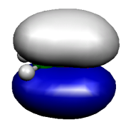
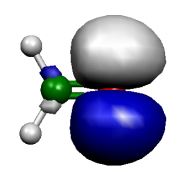
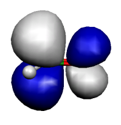
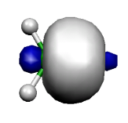
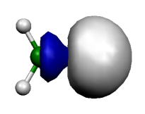
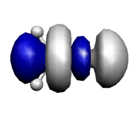

Natural Bond Orbital (NBO) Analysis¶
A popular and useful method for population analysis is the natural bond orbital analysis due to Weinhold and co-workers. It is implemented in the NBO program which is distributed in older versions via the CCL list and in newer versions via the University of Wisconsin/Madison. Information about the NBO program can be found at http://www.chem.wisc.edu/~nbo7. In order to use it together with ORCA you need a version of the stand-alone executable. Starting with version 3.1.x ORCA can only be used with NBO6 or NBO7. To specify the NBO executable the environment variable NBOEXE=/full/name/of/nbo7-executable has to be set. As the NBO part of the interface is not independent of the integer data-type width (i4 or i8), the NBO executable which will be used together with ORCA has to be compiled using i8!
ORCA features two methods to interface with the NBO program: ! NBO
keyword and the %nbo-block. The following example illustrates the use
for formaldehyde:
4 structure (0 1) C 0.000000 0.000000 0.000000 O 1.200000 0.000000 0.000000 H -0.550000 0.952628 0.000000 H -0.550000 -0.952628 -0.000000
# # Test the interface to the NBO program # ! RHF SVP NBO * xyz 0 1 C 0.000000 0.000000 0.000000 O 1.200000 0.000000 0.000000 H -0.550000 0.952628 0.000000 H -0.550000 -0.952628 -0.000000 *
This produces the following output:
Now starting NBO....
*********************************** NBO 7.0 ***********************************
N A T U R A L A T O M I C O R B I T A L A N D
N A T U R A L B O N D O R B I T A L A N A L Y S I S
************************ development version (D000000) ************************
(c) Copyright 1996-2018 Board of Regents of the University of Wisconsin System
on behalf of the Theoretical Chemistry Institute. All rights reserved.
Cite this program [NBO 7.0.0 (15-Nov-2018)] as:
NBO 7.0. E. D. Glendening, J. K. Badenhoop, A. E. Reed,
J. E. Carpenter, J. A. Bohmann, C. M. Morales, P. Karafiloglou,
C. R. Landis, and F. Weinhold, Theoretical Chemistry Institute,
University of Wisconsin, Madison, WI (2018)
/NPA / : Natural Population Analysis
/NBO / : Natural Bond Orbital Analysis
/AONBO / : Checkpoint the AO to NBO transformation
/ARCHIVE/ : Write the archive file to lfn47
Job title: ORCA Job: NBO_1
NATURAL POPULATIONS: Natural atomic orbital occupancies
NAO Atom No lang Type(AO) Occupancy Energy
-------------------------------------------------------
1 C 1 s Cor( 1s) 1.99997 -11.34329
2 C 1 s Val( 2s) 1.01533 -0.17540
3 C 1 s Ryd( 3s) 0.00701 0.61376
4 C 1 px Val( 2p) 0.81697 0.08822
5 C 1 px Ryd( 3p) 0.01268 0.63900
6 C 1 py Val( 2p) 1.09795 -0.01243
7 C 1 py Ryd( 3p) 0.00055 0.80803
8 C 1 pz Val( 2p) 0.66003 -0.03464
9 C 1 pz Ryd( 3p) 0.00283 0.62824
10 C 1 dxy Ryd( 3d) 0.00576 2.75039
11 C 1 dxz Ryd( 3d) 0.00375 2.25746
12 C 1 dyz Ryd( 3d) 0.00000 2.08566
13 C 1 dx2y2 Ryd( 3d) 0.00337 2.74845
14 C 1 dz2 Ryd( 3d) 0.00114 2.40647
15 O 2 s Cor( 1s) 1.99998 -20.56485
16 O 2 s Val( 2s) 1.70725 -0.92198
17 O 2 s Ryd( 3s) 0.00171 1.55322
18 O 2 px Val( 2p) 1.62177 -0.42255
19 O 2 px Ryd( 3p) 0.00079 1.29654
20 O 2 py Val( 2p) 1.91529 -0.46844
21 O 2 py Ryd( 3p) 0.00383 1.41052
22 O 2 pz Val( 2p) 1.32984 -0.28626
23 O 2 pz Ryd( 3p) 0.00011 1.30080
24 O 2 dxy Ryd( 3d) 0.00213 3.26414
25 O 2 dxz Ryd( 3d) 0.00340 3.20490
26 O 2 dyz Ryd( 3d) 0.00000 2.98918
27 O 2 dx2y2 Ryd( 3d) 0.00406 3.55008
28 O 2 dz2 Ryd( 3d) 0.00119 3.17511
29 H 3 s Val( 1s) 0.88576 0.07107
30 H 3 s Ryd( 2s) 0.00298 0.41181
31 H 3 px Ryd( 2p) 0.00030 2.18260
32 H 3 py Ryd( 2p) 0.00159 2.49146
33 H 3 pz Ryd( 2p) 0.00002 1.85643
34 H 4 s Val( 1s) 0.88576 0.07107
35 H 4 s Ryd( 2s) 0.00298 0.41181
36 H 4 px Ryd( 2p) 0.00030 2.18260
37 H 4 py Ryd( 2p) 0.00159 2.49146
38 H 4 pz Ryd( 2p) 0.00002 1.85643
Summary of Natural Population Analysis:
Natural Population
Natural ---------------------------------------------
Atom No Charge Core Valence Rydberg Total
--------------------------------------------------------------------
C 1 0.37265 1.99997 3.59028 0.03709 5.62735
O 2 -0.59134 1.99998 6.57415 0.01720 8.59134
H 3 0.10934 0.00000 0.88576 0.00489 0.89066
H 4 0.10934 0.00000 0.88576 0.00489 0.89066
====================================================================
* Total * -0.00000 3.99995 11.93596 0.06408 16.00000
Natural Population
---------------------------------------------------------
Core 3.99995 ( 99.9988% of 4)
Valence 11.93596 ( 99.4664% of 12)
Natural Minimal Basis 15.93592 ( 99.5995% of 16)
Natural Rydberg Basis 0.06408 ( 0.4005% of 16)
---------------------------------------------------------
Atom No Natural Electron Configuration
----------------------------------------------------------------------------
C 1 [core]2s( 1.02)2p( 2.57)3s( 0.01)3p( 0.02)3d( 0.01)
O 2 [core]2s( 1.71)2p( 4.87)3d( 0.01)
H 3 1s( 0.89)
H 4 1s( 0.89)
NATURAL BOND ORBITAL ANALYSIS:
Occupancies Lewis Structure Low High
Max Occ ------------------- ----------------- occ occ
Cycle Ctr Thresh Lewis non-Lewis CR BD nC LP (L) (NL)
============================================================================
1 2 1.90 15.89671 0.10329 2 4 0 2 0 0
----------------------------------------------------------------------------
Structure accepted: No low occupancy Lewis orbitals
-------------------------------------------------------
Core 3.99995 ( 99.999% of 4)
Valence Lewis 11.89676 ( 99.140% of 12)
================== =============================
Total Lewis 15.89671 ( 99.354% of 16)
-----------------------------------------------------
Valence non-Lewis 0.07835 ( 0.490% of 16)
Rydberg non-Lewis 0.02493 ( 0.156% of 16)
================== =============================
Total non-Lewis 0.10329 ( 0.646% of 16)
-------------------------------------------------------
(Occupancy) Bond orbital / Coefficients / Hybrids
------------------ Lewis ------------------------------------------------------
1. (1.99997) CR ( 1) C 1 s(100.00%)
1.0000 0.0000 0.0000 0.0000 0.0000
0.0000 0.0000 0.0000 0.0000 0.0000
0.0000 0.0000 0.0000 0.0000
2. (1.99998) CR ( 1) O 2 s(100.00%)
1.0000 0.0000 0.0000 0.0000 0.0000
0.0000 0.0000 0.0000 0.0000 0.0000
0.0000 0.0000 0.0000 0.0000
3. (1.98853) LP ( 1) O 2 s( 56.22%)p 0.78( 43.73%)d 0.00( 0.05%)
0.0000 0.7496 -0.0170 0.6612 0.0069
0.0000 0.0000 0.0000 0.0000 0.0000
0.0000 0.0000 -0.0201 0.0100
4. (1.91757) LP ( 2) O 2 s( 0.00%)p 1.00( 99.89%)d 0.00( 0.11%)
0.0000 0.0000 0.0000 -0.0000 -0.0000
0.9994 -0.0098 0.0000 -0.0000 -0.0330
-0.0000 0.0000 0.0000 -0.0000
5. (1.99996) BD ( 1) C 1- O 2
( 33.33%) 0.5773* C 1 s( 0.00%)p 1.00( 99.44%)d 0.01( 0.56%)
0.0000 -0.0000 -0.0000 0.0000 -0.0000
-0.0000 0.0000 0.9951 -0.0652 -0.0000
0.0750 0.0000 -0.0000 0.0000
( 66.67%) 0.8165* O 2 s( 0.00%)p 1.00( 99.75%)d 0.00( 0.25%)
0.0000 -0.0000 0.0000 0.0000 -0.0000
-0.0000 0.0000 0.9987 -0.0090 0.0000
-0.0505 0.0000 0.0000 -0.0000
6. (1.99975) BD ( 2) C 1- O 2
( 32.59%) 0.5709* C 1 s( 32.18%)p 2.09( 67.35%)d 0.01( 0.46%)
0.0000 0.5628 0.0714 0.8149 0.0973
-0.0000 -0.0000 -0.0000 -0.0000 -0.0000
-0.0000 0.0000 0.0618 -0.0286
( 67.41%) 0.8211* O 2 s( 43.84%)p 1.27( 55.85%)d 0.01( 0.31%)
0.0000 0.6615 0.0284 -0.7470 -0.0215
-0.0000 0.0000 -0.0000 -0.0000 0.0000
0.0000 0.0000 0.0490 -0.0270
7. (1.99548) BD ( 1) C 1- H 3
( 56.63%) 0.7526* C 1 s( 33.98%)p 1.94( 65.86%)d 0.00( 0.16%)
0.0000 0.5826 -0.0192 -0.3995 -0.0029
0.7063 -0.0087 0.0000 -0.0000 -0.0318
-0.0000 0.0000 -0.0180 -0.0153
( 43.37%) 0.6585* H 3 s( 99.79%)p 0.00( 0.21%)
0.9989 -0.0095 0.0184 -0.0416 0.0000
8. (1.99548) BD ( 1) C 1- H 4
( 56.63%) 0.7526* C 1 s( 33.98%)p 1.94( 65.86%)d 0.00( 0.16%)
0.0000 0.5826 -0.0192 -0.3995 -0.0029
-0.7063 0.0087 -0.0000 0.0000 0.0318
0.0000 0.0000 -0.0180 -0.0153
( 43.37%) 0.6585* H 4 s( 99.79%)p 0.00( 0.21%)
0.9989 -0.0095 0.0184 0.0416 -0.0000
---------------- non-Lewis ----------------------------------------------------
9. (0.00000) BD*( 1) C 1- O 2
( 66.67%) 0.8165* C 1 s( 0.00%)p 1.00( 99.44%)d 0.01( 0.56%)
( 33.33%) -0.5773* O 2 s( 0.00%)p 1.00( 99.75%)d 0.00( 0.25%)
10. (0.00000) BD*( 2) C 1- O 2
( 67.41%) 0.8211* C 1 s( 32.18%)p 2.09( 67.35%)d 0.01( 0.46%)
( 32.59%) -0.5709* O 2 s( 43.84%)p 1.27( 55.85%)d 0.01( 0.31%)
11. (0.03918) BD*( 1) C 1- H 3
( 43.37%) 0.6585* C 1 s( 33.98%)p 1.94( 65.86%)d 0.00( 0.16%)
0.0000 -0.5826 0.0192 0.3995 0.0029
-0.7063 0.0087 -0.0000 0.0000 0.0318
0.0000 0.0000 0.0180 0.0153
( 56.63%) -0.7526* H 3 s( 99.79%)p 0.00( 0.21%)
-0.9989 0.0095 -0.0184 0.0416 -0.0000
12. (0.03918) BD*( 1) C 1- H 4
( 43.37%) 0.6585* C 1 s( 33.98%)p 1.94( 65.86%)d 0.00( 0.16%)
0.0000 -0.5826 0.0192 0.3995 0.0029
0.7063 -0.0087 0.0000 -0.0000 -0.0318
-0.0000 0.0000 0.0180 0.0153
( 56.63%) -0.7526* H 4 s( 99.79%)p 0.00( 0.21%)
-0.9989 0.0095 -0.0184 -0.0416 0.0000
13. (0.00969) RY ( 1) C 1 s( 29.83%)p 2.30( 68.57%)d 0.05( 1.60%)
0.0000 -0.0565 0.5432 -0.1169 0.8198
0.0000 -0.0000 0.0000 -0.0000 -0.0000
0.0000 0.0000 0.1087 -0.0648
14. (0.00517) RY ( 2) C 1 s( 0.00%)p 1.00( 9.56%)d 9.46( 90.44%)
0.0000 0.0000 -0.0000 0.0000 -0.0000
0.0465 0.3057 0.0000 -0.0000 0.9510
0.0000 0.0000 -0.0000 -0.0000
15. (0.00001) RY ( 3) C 1 s( 20.02%)p 0.82( 16.47%)d 3.17( 63.52%)
16. (0.00000) RY ( 4) C 1 s( 0.00%)p 1.00( 90.64%)d 0.10( 9.36%)
17. (0.00000) RY ( 5) C 1 s( 0.00%)p 1.00(100.00%)d 0.00( 0.00%)
18. (0.00000) RY ( 6) C 1 s( 42.72%)p 0.35( 15.02%)d 0.99( 42.26%)
19. (0.00000) RY ( 7) C 1 s( 0.00%)p 1.00( 0.56%)d99.99( 99.44%)
20. (0.00000) RY ( 8) C 1 s( 0.00%)p 0.00( 0.00%)d 1.00(100.00%)
21. (0.00000) RY ( 9) C 1 s( 7.29%)p 0.09( 0.66%)d12.63( 92.05%)
22. (0.00368) RY ( 1) O 2 s( 0.00%)p 1.00( 98.96%)d 0.01( 1.04%)
0.0000 -0.0000 -0.0000 0.0000 0.0000
0.0064 0.9948 -0.0000 0.0000 -0.1018
0.0000 0.0000 -0.0000 0.0000
23. (0.00014) RY ( 2) O 2 s( 35.10%)p 1.44( 50.60%)d 0.41( 14.30%)
0.0000 -0.0178 0.5922 0.0556 -0.7091
0.0000 -0.0000 -0.0000 0.0000 -0.0000
0.0000 0.0000 0.3336 -0.1780
24. (0.00000) RY ( 3) O 2 s( 56.05%)p 0.25( 13.79%)d 0.54( 30.17%)
25. (0.00000) RY ( 4) O 2 s( 0.00%)p 1.00(100.00%)d 0.00( 0.00%)
26. (0.00000) RY ( 5) O 2 s( 0.00%)p 1.00( 1.14%)d86.35( 98.86%)
27. (0.00000) RY ( 6) O 2 s( 0.00%)p 1.00( 0.25%)d99.99( 99.75%)
28. (0.00000) RY ( 7) O 2 s( 0.00%)p 0.00( 0.00%)d 1.00(100.00%)
29. (0.00000) RY ( 8) O 2 s( 6.72%)p 5.27( 35.42%)d 8.61( 57.85%)
30. (0.00000) RY ( 9) O 2 s( 2.07%)p 0.30( 0.61%)d47.00( 97.32%)
31. (0.00308) RY ( 1) H 3 s( 99.42%)p 0.01( 0.58%)
0.0096 0.9970 -0.0710 -0.0281 0.0000
32. (0.00002) RY ( 2) H 3 s( 0.22%)p99.99( 99.78%)
33. (0.00002) RY ( 3) H 3 s( 0.00%)p 1.00(100.00%)
34. (0.00001) RY ( 4) H 3 s( 0.57%)p99.99( 99.43%)
35. (0.00308) RY ( 1) H 4 s( 99.42%)p 0.01( 0.58%)
0.0096 0.9970 -0.0710 0.0281 0.0000
36. (0.00002) RY ( 2) H 4 s( 0.22%)p99.99( 99.78%)
37. (0.00002) RY ( 3) H 4 s( 0.00%)p 1.00(100.00%)
38. (0.00001) RY ( 4) H 4 s( 0.57%)p99.99( 99.43%)
NHO DIRECTIONALITY AND BOND BENDING (deviation from line of nuclear centers at
the position of maximum hybrid amplitude)
[Thresholds for printing: angular deviation > 1.0 degree]
p- or d-character > 25.0%
orbital occupancy > 0.10e
Line of Centers Hybrid 1 Hybrid 2
--------------- ------------------- ------------------
NBO Theta Phi Theta Phi Dev Theta Phi Dev
===============================================================================
3. LP ( 1) O 2 -- -- 90.0 0.0 -- -- -- --
4. LP ( 2) O 2 -- -- 90.0 90.7 -- -- -- --
5. BD ( 1) C 1- O 2 90.0 0.0 3.0 0.0 87.0 178.7 180.0 88.7
SECOND ORDER PERTURBATION THEORY ANALYSIS OF FOCK MATRIX IN NBO BASIS
Threshold for printing: 0.50 kcal/mol
E(2) E(NL)-E(L) F(L,NL)
Donor (L) NBO Acceptor (NL) NBO kcal/mol a.u. a.u.
===============================================================================
within unit 1
3. LP ( 1) O 2 13. RY ( 1) C 1 8.58 1.40 0.098
4. LP ( 2) O 2 11. BD*( 1) C 1- H 3 26.11 1.16 0.156
4. LP ( 2) O 2 12. BD*( 1) C 1- H 4 26.11 1.16 0.156
4. LP ( 2) O 2 14. RY ( 2) C 1 5.72 3.06 0.118
4. LP ( 2) O 2 26. RY ( 5) O 2 0.73 3.75 0.047
7. BD ( 1) C 1- H 3 12. BD*( 1) C 1- H 4 0.74 1.42 0.029
7. BD ( 1) C 1- H 3 22. RY ( 1) O 2 2.25 2.12 0.062
8. BD ( 1) C 1- H 4 11. BD*( 1) C 1- H 3 0.74 1.42 0.029
8. BD ( 1) C 1- H 4 22. RY ( 1) O 2 2.25 2.12 0.062
NATURAL BOND ORBITALS (Summary):
Principal Delocalizations
NBO Occupancy Energy (geminal,vicinal,remote)
===============================================================================
Molecular unit 1 (CH2O)
------ Lewis --------------------------------------
1. CR ( 1) C 1 1.99997 -11.34329
2. CR ( 1) O 2 1.99998 -20.56485
3. LP ( 1) O 2 1.98853 -0.81352 13(v)
4. LP ( 2) O 2 1.91757 -0.46975 11(v),12(v),14(v),26(g)
5. BD ( 1) C 1- O 2 1.99996 -0.53505
6. BD ( 2) C 1- O 2 1.99975 -1.23345
7. BD ( 1) C 1- H 3 1.99548 -0.72703 22(v),12(g)
8. BD ( 1) C 1- H 4 1.99548 -0.72703 22(v),11(g)
------ non-Lewis ----------------------------------
9. BD*( 1) C 1- O 2 0.00000 0.20704
10. BD*( 2) C 1- O 2 0.00000 0.95146
11. BD*( 1) C 1- H 3 0.03918 0.69317
12. BD*( 1) C 1- H 4 0.03918 0.69317
13. RY ( 1) C 1 0.00969 0.58169
14. RY ( 2) C 1 0.00517 2.58837
15. RY ( 3) C 1 0.00001 1.75652
16. RY ( 4) C 1 0.00000 0.96046
17. RY ( 5) C 1 0.00000 0.64510
18. RY ( 6) C 1 0.00000 1.49223
19. RY ( 7) C 1 0.00000 2.24615
20. RY ( 8) C 1 0.00000 2.08566
21. RY ( 9) C 1 0.00000 2.49414
22. RY ( 1) O 2 0.00368 1.39676
23. RY ( 2) O 2 0.00014 1.56107
24. RY ( 3) O 2 0.00000 2.18160
25. RY ( 4) O 2 0.00000 1.30222
26. RY ( 5) O 2 0.00000 3.27920
27. RY ( 6) O 2 0.00000 3.20505
28. RY ( 7) O 2 0.00000 2.98918
29. RY ( 8) O 2 0.00000 2.69359
30. RY ( 9) O 2 0.00000 3.12898
31. RY ( 1) H 3 0.00308 0.41874
32. RY ( 2) H 3 0.00002 2.57996
33. RY ( 3) H 3 0.00002 1.85643
34. RY ( 4) H 3 0.00001 2.06898
35. RY ( 1) H 4 0.00308 0.41874
36. RY ( 2) H 4 0.00002 2.57996
37. RY ( 3) H 4 0.00002 1.85643
38. RY ( 4) H 4 0.00001 2.06898
-------------------------------
Total Lewis 15.89671 ( 99.3545%)
Valence non-Lewis 0.07835 ( 0.4897%)
Rydberg non-Lewis 0.02493 ( 0.1558%)
-------------------------------
Total unit 1 16.00000 (100.0000%)
Charge unit 1 0.00000
$CHOOSE
LONE 2 2 END
BOND D 1 2 S 1 3 S 1 4 END
$END
NBO analysis completed in 0.05 CPU seconds (0 wall seconds)
Maximum scratch memory used by NBO was 297106 words (2.27 MB)
Stopping NBO...Storing NBOs: NBO_1.nbo
*** returned from NBO program ***
Thus, in this example the NBO analysis of formaldehyde shows that a single Lewis structure is dominant with single bonds between C and H, a double bond between C and O and two lone pairs at the oxygen -- just as ordinary chemical arguments would imply. In addition, the program produces the four corresponding valence antibonds. The remaining components of the basis set span the "Rydberg" space and lead to semilocalized, orthogonal orbitals that are assigned to single atoms (Note the nomenclature: BD \(=\) bond, BD* \(=\) antibond, LP \(=\) lone pair, CR \(=\) core orbital, RY\(=\) Rydberg orbital). The NPA analysis shows a patially negative oxygen and partially positive carbon and hydrogen atoms.
Additionally, the NBO orbitals are stored in the ORCA .gbw file format
as jobname.nbo. This file can be used for further analysis and usage
with ORCA e.g. for plotting orbitals via orca_plot.
The NBO program has many additional features and analysis tools. The
features that are implemented in ORCA can be controlled via the
%nbo-block
%nbo
NBOKEYLIST = "$NBO ... $END"
DELKEYLIST = "$DEL ... $END"
COREKEYLIST = "$CORE ... $END"
NRTSTRKEYLIST = "$NRTSTR ... $END"
NPEPAKEYLIST = "$NPEPA ... $END"
end
The syntax of the respective keylists is given by the NBO6.x/NBO7.x manual.
Specifying the single ! NBO keyword corresponds to the %nbo-block
The full set of features beyond those which can be give via the %nbo
block can be accessed using the file FILE.47, which is generated by
the NBO program. This is an ascii file that can be edited with a text
editor. Add or remove keywords in the corresponding blocks as needed and
call the gennbo program like
ABC|DEF






Six NBOs of the H\(_2\)CO molecule. Shown are the occupied bonding \(\pi\) and \(\sigma\) orbitals (left) for C and O, the two oxygen lone pairs (middle) and the two \(\pi^*\) and \(\sigma^*\) antibonding orbitals (right).
The FILE.47 file looks like:
$GENNBO NATOMS=4 NBAS=38 UPPER BODM FORMAT $END
$NBO $END
$COORD
ORCA Job: check
6 6 0.000000 0.000000 0.000000
8 8 2.267671 0.000000 0.000000
1 1 -1.039349 1.800206 0.000000
1 1 -1.039349 -1.800206 0.000000
$END
$BASIS
If you have no need for this (rather large) file, then you have to delete it manually!
NBO Deletions¶
An advanced feature, which has been implemented via the ORCA-NBO interface, is the possibility of using deletions.
Now starting NBO....
*********************************** NBO 7.0 ***********************************
N A T U R A L A T O M I C O R B I T A L A N D
N A T U R A L B O N D O R B I T A L A N A L Y S I S
************************ development version (D000000) ************************
(c) Copyright 1996-2018 Board of Regents of the University of Wisconsin System
on behalf of the Theoretical Chemistry Institute. All rights reserved.
Cite this program [NBO 7.0.0 (15-Nov-2018)] as:
NBO 7.0. E. D. Glendening, J. K. Badenhoop, A. E. Reed,
J. E. Carpenter, J. A. Bohmann, C. M. Morales, P. Karafiloglou,
C. R. Landis, and F. Weinhold, Theoretical Chemistry Institute,
University of Wisconsin, Madison, WI (2018)
/NPA / : Natural Population Analysis
/NBO / : Natural Bond Orbital Analysis
/AONBO / : Checkpoint the AO to NBO transformation
/ARCHIVE/ : Write the archive file to lfn47
Job title: ORCA Job: NBO_1
NATURAL POPULATIONS: Natural atomic orbital occupancies
NAO Atom No lang Type(AO) Occupancy Energy
-------------------------------------------------------
1 C 1 s Cor( 1s) 1.99997 -11.34329
2 C 1 s Val( 2s) 1.01533 -0.17540
3 C 1 s Ryd( 3s) 0.00701 0.61376
4 C 1 px Val( 2p) 0.81697 0.08822
5 C 1 px Ryd( 3p) 0.01268 0.63900
6 C 1 py Val( 2p) 1.09795 -0.01243
7 C 1 py Ryd( 3p) 0.00055 0.80803
8 C 1 pz Val( 2p) 0.66003 -0.03464
9 C 1 pz Ryd( 3p) 0.00283 0.62824
10 C 1 dxy Ryd( 3d) 0.00576 2.75039
11 C 1 dxz Ryd( 3d) 0.00375 2.25746
12 C 1 dyz Ryd( 3d) 0.00000 2.08566
13 C 1 dx2y2 Ryd( 3d) 0.00337 2.74845
14 C 1 dz2 Ryd( 3d) 0.00114 2.40647
15 O 2 s Cor( 1s) 1.99998 -20.56485
16 O 2 s Val( 2s) 1.70725 -0.92198
17 O 2 s Ryd( 3s) 0.00171 1.55322
18 O 2 px Val( 2p) 1.62177 -0.42255
19 O 2 px Ryd( 3p) 0.00079 1.29654
20 O 2 py Val( 2p) 1.91529 -0.46844
21 O 2 py Ryd( 3p) 0.00383 1.41052
22 O 2 pz Val( 2p) 1.32984 -0.28626
23 O 2 pz Ryd( 3p) 0.00011 1.30080
24 O 2 dxy Ryd( 3d) 0.00213 3.26414
25 O 2 dxz Ryd( 3d) 0.00340 3.20490
26 O 2 dyz Ryd( 3d) 0.00000 2.98918
27 O 2 dx2y2 Ryd( 3d) 0.00406 3.55008
28 O 2 dz2 Ryd( 3d) 0.00119 3.17511
29 H 3 s Val( 1s) 0.88576 0.07107
30 H 3 s Ryd( 2s) 0.00298 0.41181
31 H 3 px Ryd( 2p) 0.00030 2.18260
32 H 3 py Ryd( 2p) 0.00159 2.49146
33 H 3 pz Ryd( 2p) 0.00002 1.85643
34 H 4 s Val( 1s) 0.88576 0.07107
35 H 4 s Ryd( 2s) 0.00298 0.41181
36 H 4 px Ryd( 2p) 0.00030 2.18260
37 H 4 py Ryd( 2p) 0.00159 2.49146
38 H 4 pz Ryd( 2p) 0.00002 1.85643
Summary of Natural Population Analysis:
Natural Population
Natural ---------------------------------------------
Atom No Charge Core Valence Rydberg Total
--------------------------------------------------------------------
C 1 0.37265 1.99997 3.59028 0.03709 5.62735
O 2 -0.59134 1.99998 6.57415 0.01720 8.59134
H 3 0.10934 0.00000 0.88576 0.00489 0.89066
H 4 0.10934 0.00000 0.88576 0.00489 0.89066
====================================================================
* Total * -0.00000 3.99995 11.93596 0.06408 16.00000
Natural Population
---------------------------------------------------------
Core 3.99995 ( 99.9988% of 4)
Valence 11.93596 ( 99.4664% of 12)
Natural Minimal Basis 15.93592 ( 99.5995% of 16)
Natural Rydberg Basis 0.06408 ( 0.4005% of 16)
---------------------------------------------------------
Atom No Natural Electron Configuration
----------------------------------------------------------------------------
C 1 [core]2s( 1.02)2p( 2.57)3s( 0.01)3p( 0.02)3d( 0.01)
O 2 [core]2s( 1.71)2p( 4.87)3d( 0.01)
H 3 1s( 0.89)
H 4 1s( 0.89)
NATURAL BOND ORBITAL ANALYSIS:
Occupancies Lewis Structure Low High
Max Occ ------------------- ----------------- occ occ
Cycle Ctr Thresh Lewis non-Lewis CR BD nC LP (L) (NL)
============================================================================
1 2 1.90 15.89671 0.10329 2 4 0 2 0 0
----------------------------------------------------------------------------
Structure accepted: No low occupancy Lewis orbitals
-------------------------------------------------------
Core 3.99995 ( 99.999% of 4)
Valence Lewis 11.89676 ( 99.140% of 12)
================== =============================
Total Lewis 15.89671 ( 99.354% of 16)
-----------------------------------------------------
Valence non-Lewis 0.07835 ( 0.490% of 16)
Rydberg non-Lewis 0.02493 ( 0.156% of 16)
================== =============================
Total non-Lewis 0.10329 ( 0.646% of 16)
-------------------------------------------------------
(Occupancy) Bond orbital / Coefficients / Hybrids
------------------ Lewis ------------------------------------------------------
1. (1.99997) CR ( 1) C 1 s(100.00%)
1.0000 0.0000 0.0000 0.0000 0.0000
0.0000 0.0000 0.0000 0.0000 0.0000
0.0000 0.0000 0.0000 0.0000
2. (1.99998) CR ( 1) O 2 s(100.00%)
1.0000 0.0000 0.0000 0.0000 0.0000
0.0000 0.0000 0.0000 0.0000 0.0000
0.0000 0.0000 0.0000 0.0000
3. (1.98853) LP ( 1) O 2 s( 56.22%)p 0.78( 43.73%)d 0.00( 0.05%)
0.0000 0.7496 -0.0170 0.6612 0.0069
0.0000 0.0000 0.0000 0.0000 0.0000
0.0000 0.0000 -0.0201 0.0100
4. (1.91757) LP ( 2) O 2 s( 0.00%)p 1.00( 99.89%)d 0.00( 0.11%)
0.0000 0.0000 0.0000 -0.0000 -0.0000
0.9994 -0.0098 0.0000 -0.0000 -0.0330
-0.0000 0.0000 0.0000 -0.0000
5. (1.99996) BD ( 1) C 1- O 2
( 33.33%) 0.5773* C 1 s( 0.00%)p 1.00( 99.44%)d 0.01( 0.56%)
0.0000 -0.0000 -0.0000 0.0000 -0.0000
-0.0000 0.0000 0.9951 -0.0652 -0.0000
0.0750 0.0000 -0.0000 0.0000
( 66.67%) 0.8165* O 2 s( 0.00%)p 1.00( 99.75%)d 0.00( 0.25%)
0.0000 -0.0000 0.0000 0.0000 -0.0000
-0.0000 0.0000 0.9987 -0.0090 0.0000
-0.0505 0.0000 0.0000 -0.0000
6. (1.99975) BD ( 2) C 1- O 2
( 32.59%) 0.5709* C 1 s( 32.18%)p 2.09( 67.35%)d 0.01( 0.46%)
0.0000 0.5628 0.0714 0.8149 0.0973
-0.0000 -0.0000 -0.0000 -0.0000 -0.0000
-0.0000 0.0000 0.0618 -0.0286
( 67.41%) 0.8211* O 2 s( 43.84%)p 1.27( 55.85%)d 0.01( 0.31%)
0.0000 0.6615 0.0284 -0.7470 -0.0215
-0.0000 0.0000 -0.0000 -0.0000 0.0000
0.0000 0.0000 0.0490 -0.0270
7. (1.99548) BD ( 1) C 1- H 3
( 56.63%) 0.7526* C 1 s( 33.98%)p 1.94( 65.86%)d 0.00( 0.16%)
0.0000 0.5826 -0.0192 -0.3995 -0.0029
0.7063 -0.0087 0.0000 -0.0000 -0.0318
-0.0000 0.0000 -0.0180 -0.0153
( 43.37%) 0.6585* H 3 s( 99.79%)p 0.00( 0.21%)
0.9989 -0.0095 0.0184 -0.0416 0.0000
8. (1.99548) BD ( 1) C 1- H 4
( 56.63%) 0.7526* C 1 s( 33.98%)p 1.94( 65.86%)d 0.00( 0.16%)
0.0000 0.5826 -0.0192 -0.3995 -0.0029
-0.7063 0.0087 -0.0000 0.0000 0.0318
0.0000 0.0000 -0.0180 -0.0153
( 43.37%) 0.6585* H 4 s( 99.79%)p 0.00( 0.21%)
0.9989 -0.0095 0.0184 0.0416 -0.0000
---------------- non-Lewis ----------------------------------------------------
9. (0.00000) BD*( 1) C 1- O 2
( 66.67%) 0.8165* C 1 s( 0.00%)p 1.00( 99.44%)d 0.01( 0.56%)
( 33.33%) -0.5773* O 2 s( 0.00%)p 1.00( 99.75%)d 0.00( 0.25%)
10. (0.00000) BD*( 2) C 1- O 2
( 67.41%) 0.8211* C 1 s( 32.18%)p 2.09( 67.35%)d 0.01( 0.46%)
( 32.59%) -0.5709* O 2 s( 43.84%)p 1.27( 55.85%)d 0.01( 0.31%)
11. (0.03918) BD*( 1) C 1- H 3
( 43.37%) 0.6585* C 1 s( 33.98%)p 1.94( 65.86%)d 0.00( 0.16%)
0.0000 -0.5826 0.0192 0.3995 0.0029
-0.7063 0.0087 -0.0000 0.0000 0.0318
0.0000 0.0000 0.0180 0.0153
( 56.63%) -0.7526* H 3 s( 99.79%)p 0.00( 0.21%)
-0.9989 0.0095 -0.0184 0.0416 -0.0000
12. (0.03918) BD*( 1) C 1- H 4
( 43.37%) 0.6585* C 1 s( 33.98%)p 1.94( 65.86%)d 0.00( 0.16%)
0.0000 -0.5826 0.0192 0.3995 0.0029
0.7063 -0.0087 0.0000 -0.0000 -0.0318
-0.0000 0.0000 0.0180 0.0153
( 56.63%) -0.7526* H 4 s( 99.79%)p 0.00( 0.21%)
-0.9989 0.0095 -0.0184 -0.0416 0.0000
13. (0.00969) RY ( 1) C 1 s( 29.83%)p 2.30( 68.57%)d 0.05( 1.60%)
0.0000 -0.0565 0.5432 -0.1169 0.8198
0.0000 -0.0000 0.0000 -0.0000 -0.0000
0.0000 0.0000 0.1087 -0.0648
14. (0.00517) RY ( 2) C 1 s( 0.00%)p 1.00( 9.56%)d 9.46( 90.44%)
0.0000 0.0000 -0.0000 0.0000 -0.0000
0.0465 0.3057 0.0000 -0.0000 0.9510
0.0000 0.0000 -0.0000 -0.0000
15. (0.00001) RY ( 3) C 1 s( 20.02%)p 0.82( 16.47%)d 3.17( 63.52%)
16. (0.00000) RY ( 4) C 1 s( 0.00%)p 1.00( 90.64%)d 0.10( 9.36%)
17. (0.00000) RY ( 5) C 1 s( 0.00%)p 1.00(100.00%)d 0.00( 0.00%)
18. (0.00000) RY ( 6) C 1 s( 42.72%)p 0.35( 15.02%)d 0.99( 42.26%)
19. (0.00000) RY ( 7) C 1 s( 0.00%)p 1.00( 0.56%)d99.99( 99.44%)
20. (0.00000) RY ( 8) C 1 s( 0.00%)p 0.00( 0.00%)d 1.00(100.00%)
21. (0.00000) RY ( 9) C 1 s( 7.29%)p 0.09( 0.66%)d12.63( 92.05%)
22. (0.00368) RY ( 1) O 2 s( 0.00%)p 1.00( 98.96%)d 0.01( 1.04%)
0.0000 -0.0000 -0.0000 0.0000 0.0000
0.0064 0.9948 -0.0000 0.0000 -0.1018
0.0000 0.0000 -0.0000 0.0000
23. (0.00014) RY ( 2) O 2 s( 35.10%)p 1.44( 50.60%)d 0.41( 14.30%)
0.0000 -0.0178 0.5922 0.0556 -0.7091
0.0000 -0.0000 -0.0000 0.0000 -0.0000
0.0000 0.0000 0.3336 -0.1780
24. (0.00000) RY ( 3) O 2 s( 56.05%)p 0.25( 13.79%)d 0.54( 30.17%)
25. (0.00000) RY ( 4) O 2 s( 0.00%)p 1.00(100.00%)d 0.00( 0.00%)
26. (0.00000) RY ( 5) O 2 s( 0.00%)p 1.00( 1.14%)d86.35( 98.86%)
27. (0.00000) RY ( 6) O 2 s( 0.00%)p 1.00( 0.25%)d99.99( 99.75%)
28. (0.00000) RY ( 7) O 2 s( 0.00%)p 0.00( 0.00%)d 1.00(100.00%)
29. (0.00000) RY ( 8) O 2 s( 6.72%)p 5.27( 35.42%)d 8.61( 57.85%)
30. (0.00000) RY ( 9) O 2 s( 2.07%)p 0.30( 0.61%)d47.00( 97.32%)
31. (0.00308) RY ( 1) H 3 s( 99.42%)p 0.01( 0.58%)
0.0096 0.9970 -0.0710 -0.0281 0.0000
32. (0.00002) RY ( 2) H 3 s( 0.22%)p99.99( 99.78%)
33. (0.00002) RY ( 3) H 3 s( 0.00%)p 1.00(100.00%)
34. (0.00001) RY ( 4) H 3 s( 0.57%)p99.99( 99.43%)
35. (0.00308) RY ( 1) H 4 s( 99.42%)p 0.01( 0.58%)
0.0096 0.9970 -0.0710 0.0281 0.0000
36. (0.00002) RY ( 2) H 4 s( 0.22%)p99.99( 99.78%)
37. (0.00002) RY ( 3) H 4 s( 0.00%)p 1.00(100.00%)
38. (0.00001) RY ( 4) H 4 s( 0.57%)p99.99( 99.43%)
NHO DIRECTIONALITY AND BOND BENDING (deviation from line of nuclear centers at
the position of maximum hybrid amplitude)
[Thresholds for printing: angular deviation > 1.0 degree]
p- or d-character > 25.0%
orbital occupancy > 0.10e
Line of Centers Hybrid 1 Hybrid 2
--------------- ------------------- ------------------
NBO Theta Phi Theta Phi Dev Theta Phi Dev
===============================================================================
3. LP ( 1) O 2 -- -- 90.0 0.0 -- -- -- --
4. LP ( 2) O 2 -- -- 90.0 90.7 -- -- -- --
5. BD ( 1) C 1- O 2 90.0 0.0 3.0 0.0 87.0 178.7 180.0 88.7
SECOND ORDER PERTURBATION THEORY ANALYSIS OF FOCK MATRIX IN NBO BASIS
Threshold for printing: 0.50 kcal/mol
E(2) E(NL)-E(L) F(L,NL)
Donor (L) NBO Acceptor (NL) NBO kcal/mol a.u. a.u.
===============================================================================
within unit 1
3. LP ( 1) O 2 13. RY ( 1) C 1 8.58 1.40 0.098
4. LP ( 2) O 2 11. BD*( 1) C 1- H 3 26.11 1.16 0.156
4. LP ( 2) O 2 12. BD*( 1) C 1- H 4 26.11 1.16 0.156
4. LP ( 2) O 2 14. RY ( 2) C 1 5.72 3.06 0.118
4. LP ( 2) O 2 26. RY ( 5) O 2 0.73 3.75 0.047
7. BD ( 1) C 1- H 3 12. BD*( 1) C 1- H 4 0.74 1.42 0.029
7. BD ( 1) C 1- H 3 22. RY ( 1) O 2 2.25 2.12 0.062
8. BD ( 1) C 1- H 4 11. BD*( 1) C 1- H 3 0.74 1.42 0.029
8. BD ( 1) C 1- H 4 22. RY ( 1) O 2 2.25 2.12 0.062
NATURAL BOND ORBITALS (Summary):
Principal Delocalizations
NBO Occupancy Energy (geminal,vicinal,remote)
===============================================================================
Molecular unit 1 (CH2O)
------ Lewis --------------------------------------
1. CR ( 1) C 1 1.99997 -11.34329
2. CR ( 1) O 2 1.99998 -20.56485
3. LP ( 1) O 2 1.98853 -0.81352 13(v)
4. LP ( 2) O 2 1.91757 -0.46975 11(v),12(v),14(v),26(g)
5. BD ( 1) C 1- O 2 1.99996 -0.53505
6. BD ( 2) C 1- O 2 1.99975 -1.23345
7. BD ( 1) C 1- H 3 1.99548 -0.72703 22(v),12(g)
8. BD ( 1) C 1- H 4 1.99548 -0.72703 22(v),11(g)
------ non-Lewis ----------------------------------
9. BD*( 1) C 1- O 2 0.00000 0.20704
10. BD*( 2) C 1- O 2 0.00000 0.95146
11. BD*( 1) C 1- H 3 0.03918 0.69317
12. BD*( 1) C 1- H 4 0.03918 0.69317
13. RY ( 1) C 1 0.00969 0.58169
14. RY ( 2) C 1 0.00517 2.58837
15. RY ( 3) C 1 0.00001 1.75652
16. RY ( 4) C 1 0.00000 0.96046
17. RY ( 5) C 1 0.00000 0.64510
18. RY ( 6) C 1 0.00000 1.49223
19. RY ( 7) C 1 0.00000 2.24615
20. RY ( 8) C 1 0.00000 2.08566
21. RY ( 9) C 1 0.00000 2.49414
22. RY ( 1) O 2 0.00368 1.39676
23. RY ( 2) O 2 0.00014 1.56107
24. RY ( 3) O 2 0.00000 2.18160
25. RY ( 4) O 2 0.00000 1.30222
26. RY ( 5) O 2 0.00000 3.27920
27. RY ( 6) O 2 0.00000 3.20505
28. RY ( 7) O 2 0.00000 2.98918
29. RY ( 8) O 2 0.00000 2.69359
30. RY ( 9) O 2 0.00000 3.12898
31. RY ( 1) H 3 0.00308 0.41874
32. RY ( 2) H 3 0.00002 2.57996
33. RY ( 3) H 3 0.00002 1.85643
34. RY ( 4) H 3 0.00001 2.06898
35. RY ( 1) H 4 0.00308 0.41874
36. RY ( 2) H 4 0.00002 2.57996
37. RY ( 3) H 4 0.00002 1.85643
38. RY ( 4) H 4 0.00001 2.06898
-------------------------------
Total Lewis 15.89671 ( 99.3545%)
Valence non-Lewis 0.07835 ( 0.4897%)
Rydberg non-Lewis 0.02493 ( 0.1558%)
-------------------------------
Total unit 1 16.00000 (100.0000%)
Charge unit 1 0.00000
$CHOOSE
LONE 2 2 END
BOND D 1 2 S 1 3 S 1 4 END
$END
NBO analysis completed in 0.05 CPU seconds (0 wall seconds)
Maximum scratch memory used by NBO was 297106 words (2.27 MB)
Stopping NBO...Storing NBOs: NBO_1.nbo
*** returned from NBO program ***
The DELKEYLIST provides NBO with the task to perform certain deletions
of orbitals/interactions. Per deletion ORCA calculates a new Fock matrix
on basis of an NBO density corresponding to the deletions:
Stopping NBO...Starting NBO again for $del instructions...
LEWIS: Delete all non-Lewis NBOs
Deletion of the following orbitals from the NBO Fock matrix:
10 11 12 13 14 15 16 17 18 19 20 21 22 23 24 25 26 27 28
Orbital occupancies:
Orbital No deletions This deletion Change
------------------------------------------------------------------------------
1. CR ( 1) C 1 1.99978 2.00000 0.00022
2. CR ( 1) N 2 1.99983 2.00000 0.00017
3. LP ( 1) N 2 1.97796 2.00000 0.02204
4. BD ( 1) C 1- N 2 1.99846 2.00000 0.00154
5. BD ( 1) C 1- H 3 1.99858 2.00000 0.00142
6. BD ( 1) C 1- H 4 1.99406 2.00000 0.00594
7. BD ( 1) C 1- H 5 1.99406 2.00000 0.00594
8. BD ( 1) N 2- H 6 1.99440 2.00000 0.00560
9. BD ( 1) N 2- H 7 1.99440 2.00000 0.00560
10. BD*( 1) C 1- N 2 0.00009 0.00000 -0.00009
11. BD*( 1) C 1- H 3 0.01567 0.00000 -0.01567
12. BD*( 1) C 1- H 4 0.00763 0.00000 -0.00763
13. BD*( 1) C 1- H 5 0.00763 0.00000 -0.00763
14. BD*( 1) N 2- H 6 0.00424 0.00000 -0.00424
15. BD*( 1) N 2- H 7 0.00424 0.00000 -0.00424
16. RY ( 1) C 1 0.00094 0.00000 -0.00094
17. RY ( 2) C 1 0.00034 0.00000 -0.00034
18. RY ( 3) C 1 0.00020 0.00000 -0.00020
19. RY ( 4) C 1 0.00001 0.00000 -0.00001
20. RY ( 1) N 2 0.00114 0.00000 -0.00114
21. RY ( 2) N 2 0.00044 0.00000 -0.00044
22. RY ( 3) N 2 0.00034 0.00000 -0.00034
23. RY ( 4) N 2 0.00001 0.00000 -0.00001
24. RY ( 1) H 3 0.00163 0.00000 -0.00163
25. RY ( 1) H 4 0.00079 0.00000 -0.00079
26. RY ( 1) H 5 0.00079 0.00000 -0.00079
27. RY ( 1) H 6 0.00117 0.00000 -0.00117
28. RY ( 1) H 7 0.00117 0.00000 -0.00117
NEXT STEP: Perform one SCF cycle to evaluate the energy of the new density
matrix constructed from the deleted NBO Fock matrix.
------------------------------------------------------------------------------
Copying NBO density...
Calculating new Fock-Matrix...
Calculating Fock-Matrix...done!
New NBO energy via Fock-Matrix: -94.629937
Starting NBO again for $del/return energy instructions...
------------------------------------------------------------------------------
Energy of deletion : -94.629936711
Total SCF energy : -94.679444929
-------------------
Energy change : 0.049508 a.u., 31.067 kcal/mol
------------------------------------------------------------------------------
Multiple deletions can also be specified, as can be seen for this example. The output then also contains the additional energy values:
Starting NBO again for $del instructions...
Deletion of the following NBO Fock matrix elements:
3, 11;
Orbital occupancies:
Orbital No deletions This deletion Change
------------------------------------------------------------------------------
1. CR ( 1) C 1 1.99978 1.99978 -0.00000
2. CR ( 1) N 2 1.99983 1.99983 -0.00000
3. LP ( 1) N 2 1.97796 1.99348 0.01552
4. BD ( 1) C 1- N 2 1.99846 1.99860 0.00015
5. BD ( 1) C 1- H 3 1.99858 1.99845 -0.00014
6. BD ( 1) C 1- H 4 1.99406 1.99404 -0.00002
7. BD ( 1) C 1- H 5 1.99406 1.99404 -0.00002
8. BD ( 1) N 2- H 6 1.99440 1.99450 0.00011
9. BD ( 1) N 2- H 7 1.99440 1.99450 0.00011
10. BD*( 1) C 1- N 2 0.00009 0.00008 -0.00000
11. BD*( 1) C 1- H 3 0.01567 0.00042 -0.01525
12. BD*( 1) C 1- H 4 0.00763 0.00780 0.00017
13. BD*( 1) C 1- H 5 0.00763 0.00780 0.00017
14. BD*( 1) N 2- H 6 0.00424 0.00424 0.00000
15. BD*( 1) N 2- H 7 0.00424 0.00424 0.00000
16. RY ( 1) C 1 0.00094 0.00063 -0.00031
17. RY ( 2) C 1 0.00034 0.00034 0.00000
18. RY ( 3) C 1 0.00020 0.00032 0.00012
19. RY ( 4) C 1 0.00001 0.00002 0.00001
20. RY ( 1) N 2 0.00114 0.00115 0.00001
21. RY ( 2) N 2 0.00044 0.00044 0.00000
22. RY ( 3) N 2 0.00034 0.00034 0.00000
23. RY ( 4) N 2 0.00001 0.00001 0.00000
24. RY ( 1) H 3 0.00163 0.00092 -0.00072
25. RY ( 1) H 4 0.00079 0.00083 0.00005
26. RY ( 1) H 5 0.00079 0.00083 0.00005
27. RY ( 1) H 6 0.00117 0.00118 0.00000
28. RY ( 1) H 7 0.00117 0.00118 0.00000
NEXT STEP: Perform one SCF cycle to evaluate the energy of the new density
matrix constructed from the deleted NBO Fock matrix.
------------------------------------------------------------------------------
Copying NBO density...
Calculating new Fock-Matrix...
Calculating Fock-Matrix...done!
New NBO energy via Fock-Matrix: -94.668383
Starting NBO again for $del/return energy instructions...
------------------------------------------------------------------------------
Energy of deletion : -94.668383268
Total SCF energy : -94.679444929
-------------------
Energy change : 0.011062 a.u., 6.941 kcal/mol
------------------------------------------------------------------------------
Note
Note that deletions are only implemented for SCF methods!
NBO for Post-HF Densities¶
NBO analysis can be performed on all methods producing a density. In some methods the density generation has to be specified explictly, e. g. for MP2 calculations this would be:
%nbo
NBOKEYLIST = "$NBO ... $END"
DELKEYLIST = "$DEL ... $END"
COREKEYLIST = "$CORE ... $END"
NRTSTRKEYLIST = "$NRTSTR ... $END"
NPEPAKEYLIST = "$NPEPA ... $END"
end
The output will contain both the NBO analysis of the SCF density as well as of the MP2 relaxed density. An NBO analysis of a density generated by the MDCI module can be specified as follows:
Again, the output will contain both the NBO analysis of the SCF density as well as of the CISD linearized density.
Natural Chemical Shielding Analysis (NCS)¶
For closed-shell calculations of NMR chemical shielding at the SCF level
(see sections
nmr.shifts and
properties.eprnmr), the NCS analysis can be
requested by adding NCS to the NBOKEYLIST. The NCS keyword accepts
the arguments U, I, CSA, XYZ, and MO to analyze the
"unperturbed", "induced", anisotropic, Cartesian, and canonical MO
contributions to the shielding tensors, respectively, as well as a
decimal number for the printing threshold (in ppm). For more
information, consult the NBO manual and the original
publication Bohmann1997-NCS.
7 structure NL -0.02 0.02 0.00 NL 0.00 0.01 0.02 NL -1.04 1.81 12.18 NL -1.24 6.10 2.26 NL 0.02 0.00 -0.00 NL 0.02 0.00 -0.00 NL 0.05 -4.41 0.95